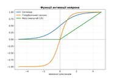
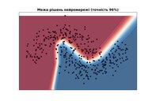
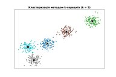
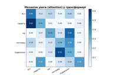
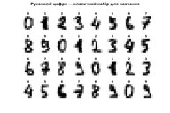
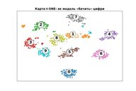
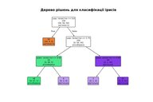
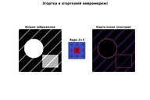
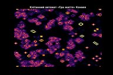
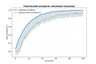

Натисніть на мініатюру, щоб відкрити зображення в повному розмірі
(1024×683 пікселів — зручно для перегляду на моніторі з роздільною здатністю від 1280×720).
Усі зображення створено програмно мовою Python за допомогою бібліотек matplotlib і scikit-learn.
12 візуалізацій штучного інтелекту
Багатошарова нейронна мережа
Вхідний шар, два приховані та вихідний. Товщина лінії показує вагу зв'язку.
|

Функції активації
Сигмоїда, гіперболічний тангенс і ReLU — «перемикачі» штучного нейрона.
|

Межа рішень нейромережі
Мережа навчилася розділяти два класи точок, що мають форму півмісяців.
|
|

Кластеризація k-середніх
Навчання без учителя: точки згруповано в 5 кластерів, хрестики — їхні центри.
|

Криві навчання
Коли помилка на перевірочних даних зростає, модель починає перенавчатися.
|

Механізм уваги
Трансформер визначає, які слова речення найтісніше пов'язані між собою.
|
|

Рукописні цифри
Зображення 8×8 пікселів, на яких класично навчають системи розпізнавання.
|

Карта t-SNE
64-вимірні зображення цифр, відображені на площину: схожі цифри збираються разом.
|

Дерево рішень
Модель класифікує квіти ірису, ставлячи послідовність простих запитань.
|
|

Згортка
Ядро 3×3 проходить зображенням і виділяє контури — так «бачить» згорткова мережа.
|

Гра «Життя»
Клітинний автомат Конвея: прості правила породжують складну поведінку.
|

Генетичний алгоритм
Пристосованість популяції зростає з кожним поколінням завдяки відбору та мутаціям.
|